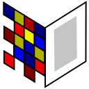

What is digilib?
- digilib is a web based client/server technology for images. The image content is processed on-the-fly by a Java Servlet on the server side so that only the visible portion of the image is sent to the web browser on the client side.
- digilib supports a wide range of image formats and viewing options on the server side while only requiring an internet browser with Javascript and a low bandwidth internet connection on the client side.
- digilib enables very detailed work on an image as required by scholars with elaborate viewing features like an option to show images on the screen in their original size.
- digilib facilitates cooperation of scholars over the internet and novel uses of source material by image annotations and stable references that can be embedded in URLs.
- digilib facilitates federation of image servers through a standards compliant IIIF Image API.
- digilib is Open Source Software under the Lesser General Public License, jointly developed by the Max Planck Institute for the History of Science, the Bibliotheca Hertziana, the University of Bern and others.
digilib resources
digilib source code, binaries and documentation can be found on the digilib project pages on GitHub.
- Source code
- Issue tracker
- Docker images
- Javadoc
- Maven repository (https://robcast.github.io/digilib-repo/maven-repo/)
First steps
Using Docker
Requirements:
docker run --rm -p 8080:8080 robcast/digilib
Then open https://localhost:8080/digilib/digilib.html in your browser.
Please see the documentation on using the digilib Docker image.
Using Java
Requirements:
git clone https://github.com/robcast/digilib.git cd digilib mvn jetty:run-exploded --projects webapp
Then open http://localhost:8080/digilib/digilib.html in your browser.
Please see the full build and install documentation.